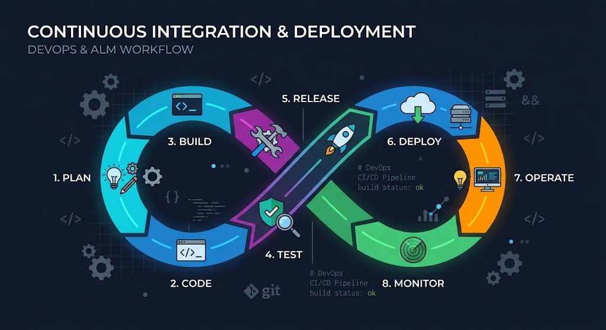
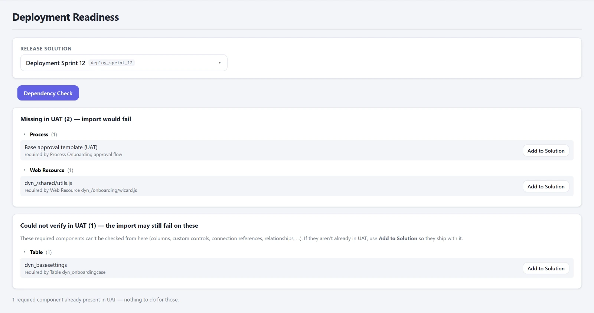
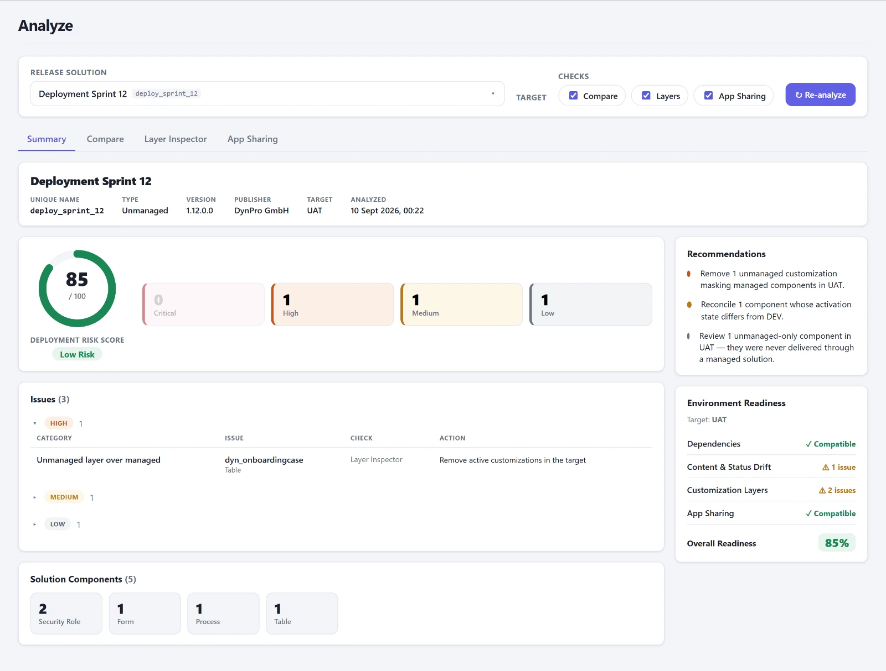
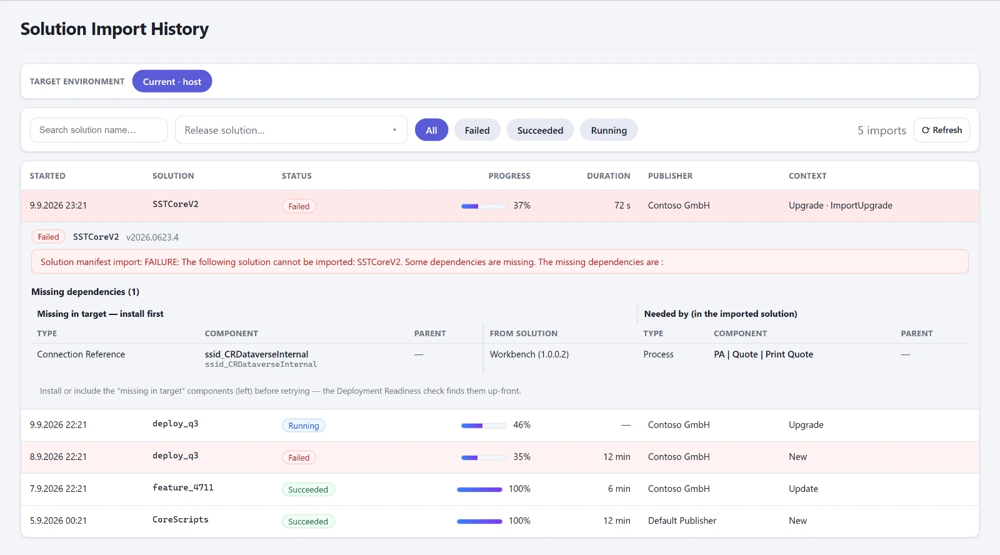

Die Gründe, aus denen ein Import scheitert, sind seit Jahren dieselben. Eine Abhängigkeit, die im Ziel fehlt, weil sie in einer anderen Solution liegt, die noch nicht drüben ist. Eine Environment Variable ohne Wert und ohne Default. Eine Connection Reference, die nirgends gebunden ist, weshalb der Flow nach dem Import aus bleibt. Ein unmanaged Layer über einer managed Komponente, der jedes künftige Deployment stillschweigend maskiert. Eine Canvas App, die ankommt und niemanden erreicht, weil Freigaben nicht mittransportiert werden.
Jede dieser Fragen ist einzeln beantwortbar. Man braucht nur Zeit und die richtigen Abfragen, und beides hat man am Abend vor dem PROD-Import nicht.

Wie man das vorher herausgefunden hat
Ehrlich gesagt: durch Importieren. Erst nach UAT, dann schauen, was knallt. Das Import-Log ist XML, in dem die eigentliche Information in einem Fehlertext steckt, den man in Excel kopiert und nach „Missing" filtert. Für die Layer gibt es in der XrmToolBox den Solution Layer Explorer, mit dem man Komponente für Komponente nachsieht. Für die Environment Variables eine Checkliste, die vor dem Import jemand abhakt, wenn er daran denkt. Für die Freigaben der Apps hat niemand eine Liste, man merkt es, wenn sich die ersten Anwender melden.
Das Muster bei alledem: Das Wissen war da, verteilt auf vier Werkzeuge und zwei Köpfe, und nie an einer Stelle vor dem Import.
Über die Zahl kann man streiten. Über die Tabelle nicht.
Erst die Abhängigkeiten, dann der Rest
Am 12. Juni kam der Dependency Check in die Konsole, heute heißt er Deployment Readiness. Er prüft eine Release-Solution gegen die Zielumgebung mit derselben Aktion, die Dataverse selbst beim Import nutzt, und listet, was dort gebraucht wird, aber weder mitkommt noch vorhanden ist. Je Fund gibt es „Add to Solution", um die fehlende Komponente direkt aufzunehmen. Das ist das Zehn-Sekunden-Gegenstück zu dem Abend.

In derselben Woche kamen der Vergleich der Prozesse über alle Umgebungen, der Layer Inspector und das App Sharing dazu, zuerst als eigene Reiter, seit dem 20. Juni gebündelt unter Analyze: ein Klick, ein Durchlauf gegen das Ziel, und das Ergebnis verdichtet zu einem Risk Score von 0 bis 100 mit einer Tabelle der Befunde darunter. Über die Zahl kann man streiten. Über die Tabelle nicht.

Nach dem Import kommt die Import History, seit dem 5. Juli. Sie zeigt die Importe einer Umgebung und parst beim Aufklappen das Log. Aus dem Fehlertext wird eine Tabelle: links die Komponente, die im Ziel fehlt, samt übergeordnetem Objekt und Herkunfts-Solution, rechts die importierte Komponente, die sie braucht. Das ist genau die Tabelle, die ich früher in Excel von Hand gebaut habe, nur dass sie jetzt in zwei Sekunden da ist.

Am selben Tag kam Env Config: Environment Variables und Connection References über alle Umgebungen nebeneinander, gematcht über den Namen, mit den drei typischen Lücken markiert. Je Connection Reference steht, wie viele Flows sie nutzen, getrennt nach aktiv und inaktiv. Eine Referenz mit null Flows ist verwaist und darf raus.
Drei Dinge, die der Konnektor nicht kann
Die Konsole liest fremde Umgebungen über den Microsoft-Dataverse-Konnektor, weil eine Code App von sich aus nur ihre eigene Umgebung erreicht. Der Konnektor kann Tabellen lesen und Aktionen aufrufen. Was er nicht kann, habe ich in diesen Wochen gelernt. Zwei Dinge bis jetzt, das dritte steht im Nachtrag.
Erstens kann er keine Functions aufrufen, nur Actions. Die Freigaben einer Canvas App liefert Dataverse über eine Function, der Konnektor antwortet darauf mit „No HTTP resource was found". Seit dem 13. Juni liest das App Sharing die Freigaben deshalb als Tabelle, direkt aus den Zugriffsrechten, und baut sich die Antwort selbst.
Zweitens sind GUIDs über Umgebungen hinweg nur stabil, wenn die Komponente sauber per Solution transportiert wurde. Eine Environment Variable, die jemand in UAT von Hand angelegt hat, trägt dort eine andere ID als in DEV. Ist passiert. Alles, was per Name importiert wird, matcht die Konsole deshalb über den Namen. Und das Änderungsdatum zählt nicht als Drift-Signal, weil jeder Import es überschreibt.
Das falsche Grün
Die unangenehmste Lektion kam Ende Juni. Deployment Readiness zeigte grün, der Import scheiterte trotzdem: eine fehlende Spalte, ein fehlendes PCF-Control und eine Connection Reference. Die Prüfung hatte Komponententypen, die sie nicht verifizieren konnte, als vorhanden gezählt. Seit dem 25. Juni gilt grün nur bei null fehlenden und null unbekannten Komponenten. Unbekannt ist nicht grün. Das klingt banal, und es hat einen Abend gekostet.
Dazu gehört ein Detail, das ich vorher nicht wusste: Der Komponententyp einer Connection Reference hat keine feste Nummer. In einer Umgebung ist es 10064, in einer anderen 10093, und dort ist 10064 eine ganz andere Tabelle. Die Konsole löst die Nummer seit heute je Umgebung aus den Metadaten auf. Vorher landeten einundsiebzig Connection References im Topf „konnte nicht geprüft werden".
Weiter geht es im dritten Teil mit dem, was im Betrieb los ist: Plugin-Fehler, Rollen und Einstellungen, die je Umgebung auseinanderlaufen. Die Validate-Gruppe im Detail steht auf der Produktseite.
Nachtrag vom 4. August: das dritte Ding
Eine JavaScript-Webressource galt im Vergleich als in jeder Zeile geändert. In DEV lag sie mit Unix-Zeilenenden, in PROD mit Windows-Zeilenenden, sonst byteidentisch. Niemand hatte sie angefasst. Seitdem wird die Drift auf dem normalisierten Text entschieden. Normalisiert werden nur Zeilenenden und die Byte-Order-Mark, also das, was ein Speichern von allein ändert. Ein Leerzeichen am Zeilenende bleibt ein Edit.